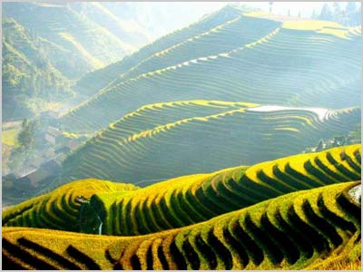

稻作文化
中国的古书记载中指出了壮族人的祖先西瓯、骆越是水稻种植的最早发明者。现在在壮族各地，都可以找到野生稻种。广西各地出土的原始社会末期的人类遗址，都发现了数量众多的稻种化石。壮族稻作文化发达，体现在地名上的稻作文化最为著名。广西、广东、云南以及东南亚的“那/纳”（水田）“板/潘/版/阪”（村寨）“布”（泉水）“南”（水、河流）“岜/巴”（石山）“罗/录/骆”（山谷）等字的齐头式地名，都是古代壮族稻作文化发达的见证，现代壮学研究已经就壮族的稻作文化作出许多探讨和论证，形成了一门独特的学问——“那”文化。
歌圩文化
歌圩是壮族诗性性格的最佳体现。传统的壮族人从出生到生命的终结，都要与歌打交道。壮族的歌，与其说是歌，还不如说是诗，因为那种随口就唱的歌词，都是没有经过什么准备的，却是句句压韵，歌词含义丰富，这些都是壮家人在生产劳动中不断锤炼出来的诗性体现。壮族的歌，大都是多声部的民歌，一人不成歌，要两人或多人一起来咏唱，“大二度”和声，是壮族人的发明，这种难度最大的多声部，曾经时使西方音乐学界感到吃惊，他们认为不科学的和声却被壮族人用嘹亮的歌声来演绎出来，这也打破了西方人历来的“中国没有多声部音乐”的偏见。刘三姐正是壮族歌圩文化的一种产物，全世界只有壮族人把对“歌仙”的崇拜放在自己的信仰中，这种信仰加风俗，使得壮族人聚居的广西成为远近闻名的“诗乡歌海”。
铜鼓文化
壮乡是全世界出土铜鼓数量和种类最多的地方。古代，壮族地区生产铜，为铸造铜鼓创造了良好条件。岭南地区最早发明和使用铜鼓的是被称为“骆越”、“俚僚” 的壮族先民。从乐器、艺术品到“都佬”（壮语：首领）权利的象征，铜鼓文化已经称为古代壮族最为灿烂的文化。
岜莱文化
岜莱，是壮语“有斑纹的山”的意思，汉语翻译成“花山壁画”。分布于南部壮族的中心分布区之一的宁明明江两岸和龙州、崇左、扶绥等县的左江两岸石灰岩峭壁上的这些惊人艺术创作，是古代壮族人创造的一个迷。这些延绵几百里的山崖峭壁上，密密麻麻地绘着出自古代壮族人手笔的各种各样的人物、动物、几何图形、仪式等图象。画面距离河面一般都有10多20米，最低处也有5、6米，最高达40多米。绘画的年代上可以追溯到两千多年前的秦汉时期，陆续创作到700多年前的元代，记录了古代壮族人的人生。至今，还没有一个人能够解释壮族先民是如何在这样的悬崖峭壁上进行创作的，这个迷期待着我们去探索。
杆栏文化
壮族的杆栏建筑与北京的四合院、广东的客家土楼、陕北的窑洞、云南的“一颗印”合称为中国五大古代建筑遗产，这种适应岭南地区潮湿炎热、毒蛇猛兽横行的建筑，后来传遍云南与东南亚各国，发展出了很多不同类型。广西的西南、西北壮族地区，仍然广泛分布着全楼居、半楼居的杆栏建筑。
壮医文化
壮医是壮民族独特的医学。《黄帝内经素问·异法方宜论》谓：“南方者，天地所长养，阳之盛处也，雾露之所聚也。其民嗜酸而食腐，故其皆致理而赤色，其病挛痹，其治宜微针。故九针者，亦从南方来”。这是汉族中医经典著作关于针刺疗法来源的直接记载。壮族是针灸的最早发明者之一，这是壮族医学的一个重要组成部分。壮医认为人体的大多数疾病，主要是因正气虚而受的痧、瘴、蛊、毒、风、湿等有形无形之毒的侵犯，致使天、地、人三气同步失调，或人体三道两路运行不畅，功能失调。故在治疗上十分强调祛毒或解毒，既重视内治，更重视外治。用药比较简便，贵在精专，组方一般不超过五味。补虚则多配以血肉有情之品。
壮剧文化
壮剧艺术其实可以说是壮族歌圩文化的延伸。虽然是受汉族戏剧的影响而最终形成的，但是最有特色的是壮族戏剧语言的韵律，都是壮族歌圩诗歌的升华。壮剧按地域不同，可以分为南路壮剧、北路壮剧、师公戏、富宁壮剧、广南壮剧等。
壮锦文化
中国的四大名锦中，壮锦是唯一的少数民族织锦。壮锦以色彩绚丽、图案别致、结实耐用而驰名古今中外。远在1000多年前的唐宋时期，壮锦就出现在汉族的典籍当中，成为当时名贵的贡品，“佳丽厚重”，是对壮锦最为贴切的比喻。
麽教文化
“麽教”，是壮学界和布依族研究学者最新提出的一个宗教名称。壮语和布依语都将自己民族宗教的神职人员称为“麽”，意思就是巫术、法术、智慧的总称。在麽经《布洛驮》里可以窥视到壮族人原生态的信仰，天地万物的产生、人类社会的发展、伦理道德的建立，都可以在这部麽经当中可以看到。总之，对“麽”有一个全面认识，就会深刻理解壮族人的现在的信仰和诗性性格的来源。